This paper aims to provide a simple yet accurate explanation
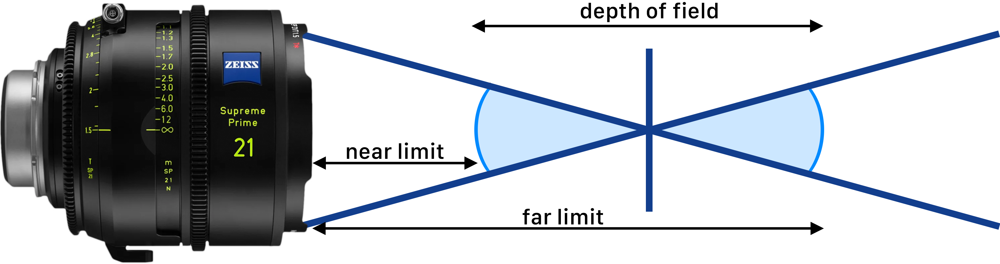
Process occurs inside and behind the lens; the illustration is simplified for clarity
Depth of Field (DoF) is a concept in photography and cinematography that refers to the range of distance within an image that appears acceptably sharp.
This range extends between two points:
Accordingly, the depth of field can be expressed with the formula:
The near and far limits of depth of field are calculated using two key factors:
Circle of Confusion (CoC) and Hyperfocal Distance.
Understanding what the CoC is will further clarify why, in the very first description of depth of field, the words “concept” and “acceptably sharp” were emphasized in bold.
The Circle of Confusion refers to the size of the blur spot created when a point of light does not come into perfect focus on the sensor or film.
When calculating depth of field, however, we use the Circle of Confusion Limit. This is the maximum diameter of that blur circle that the human eye can still perceive as acceptably sharp from a standard viewing distance.
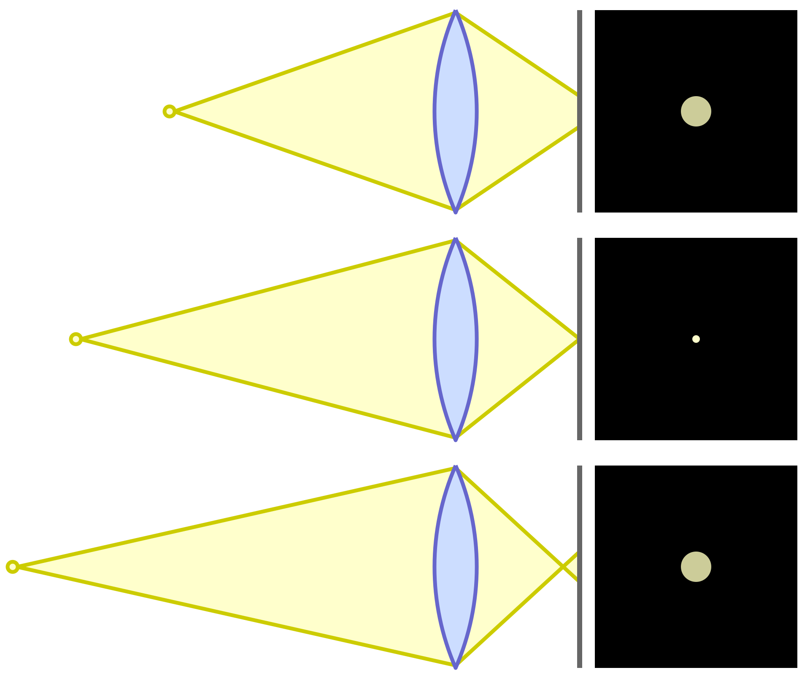
This definition of the CoC limit explains why depth of field is considered a concept rather than a strict scientific measurement. The threshold is based on what the human eye can perceive as “acceptably sharp” — a subjective experience, since perception of sharpness varies from person to person.
Still, this leads to an important question: What is meant by a standard viewing distance?
The closest comfortable viewing distance for most people is about 25 cm, assuming normal visual acuity (20/20 vision). At this distance, the human eye can resolve about 5 line pairs per millimeter, giving a Circle of Confusion (CoC) of 0.2 mm in the final image. A comfortable viewing distance is also one at which the angle of view is about 60°. At 25 cm, this corresponds to roughly 30 cm, the diagonal of an 8×10 inch image.
When the original image is enlarged, the acceptable CoC must be reduced in proportion to the enlargement factor. For example, enlarging a 35 mm frame to 25 cm requires a factor of ~7, so the acceptable CoC in the original image becomes 0.029 mm. This is why depth of field tables often list CoC of 0.029 mm for a full-frame sensor, which is simplified with the formula:
where d is the sensor diagonal.
Since we have already explained the Circle of Confusion, there is one more key factor left to define: the Hyperfocal Distance.
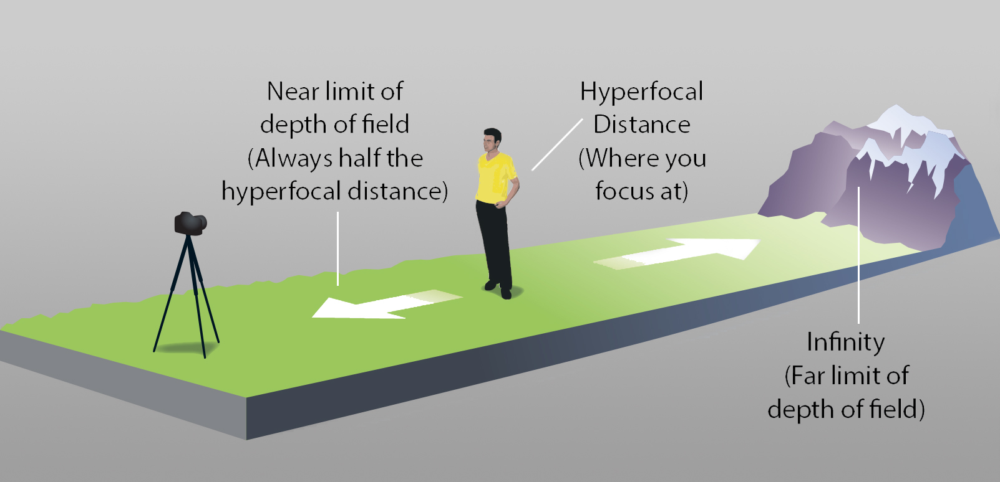
Hyperfocal Distance is the closest distance at which a lens can be focused while keeping objects at infinity acceptably sharp. When the lens is focused at the hyperfocal distance, everything from half that distance out to infinity will appear acceptably sharp.
This provides the maximum possible depth of field for a given focal length, aperture, and Circle of Confusion.
This is where the importance of the Circle of Confusion lies. In order to find Near Limit DoF and Far Limit DoF we need Hyperfocal Distance which is calculated using focal length, f-number and Circle of Confusion (CoC) as can be seen in the formula below:
where f is the focal length, N is the f-number and c is the CoC.
As explained at the beginning of this paper, the near and far limits of depth of field are the closest and farthest distances from the camera at which objects still appear acceptably sharp.
The formulas for the near and far depth of field limits are given below:
where H is the Hyperfocal Distance, u is the focusing distance in mm and f is the focal length.
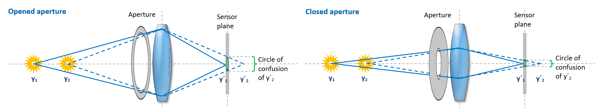
Based on all this information, we can conclude that the only direct influencers of depth of field are the subject distance and the entrance pupil (effective aperture) diameter.
Factors such as f-number and focal length are indirect influencers, since the entrance pupil size is defined as the ratio of focal length to f-number. But what about sensor size? If the Circle of Confusion is defined relative to the image area, how can sensor size be only an indirect influencer?
While the CoC is relative to the image area, the differences in CoC limit values between two sensor sizes are extremely small (on the order of micrometers). Consequently, they have no meaningful impact on perceived sharpness and only a negligible effect on depth of field calculations.
This brings us to a final question you may already be asking: If sensor size has no significant direct effect on depth of field, then why does the appearance of background blur change with different sensor sizes?
That question leads us into the topic of format equivalency. But before we get there, we need to examine one last phenomenon: the Blur Circle.
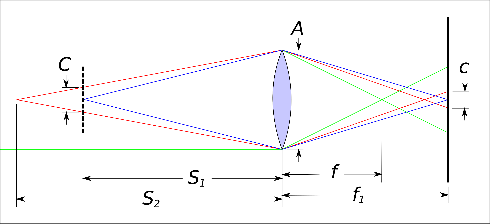
Blur Circles are out-of-focus discs that form in an image when a point of light is not perfectly in focus. The term is often used interchangeably with the Circle of Confusion, but the two have slightly different meanings.
The CoC defines the theoretical acceptable limit of sharpness. It is used in depth of field calculations, and relative to the image area. Blur Circles, on the other hand, are the actual out-of-focus discs visible in an image. They are relative to the image subject rather than the image area.
To connect this to a more familiar concept, consider bokeh. Bokeh refers to the aesthetic quality of the out-of-focus areas in an image, particularly the way blur circles appear and interact with background elements. However, blur circles and bokeh are not the same: a blur circle is the physical characteristic of out-of-focus light, while bokeh describes the subjective visual impression and artistic appeal of that effect.
Now that we’ve covered the technical details, let’s turn to some practical examples.
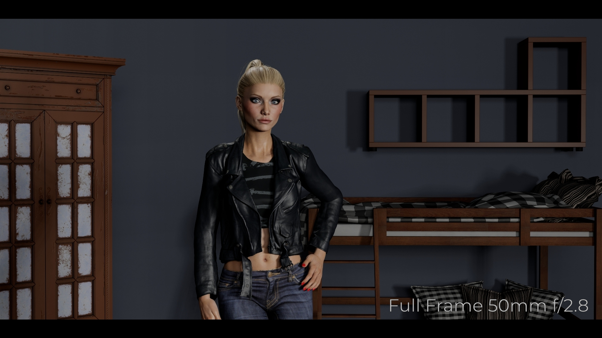
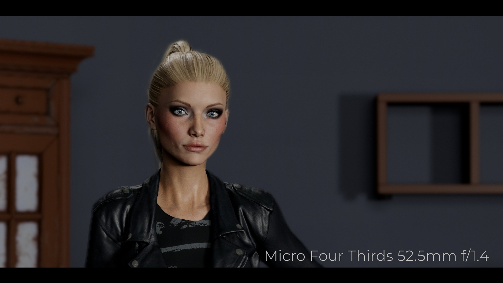
The images on the left use a full-frame virtual camera as the reference, while those on the right use a Micro Four Thirds virtual camera. Formats are chosen for simplicity, since a Micro Four Thirds sensor has half the area of a full-frame sensor.
If we instead changed only the sensor size while keeping the focal length and f-number the same, we would still get the same blur, but the composition would differ. This scenario was not included, since it does not reflect how format equivalency is normally applied.
It is important to note that these are computer-generated images. In the physical world, real optics will always introduce small differences, since lenses of different focal lengths and apertures may have distinct characteristics. However, these differences are due to the lens design, not the sensor size.
How can two different formats produce the same background blur?
The answer is simple: the blur circle size was matched. Let’s take a closer look at how this works in detail.
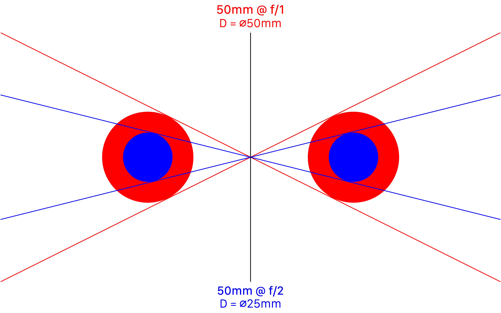
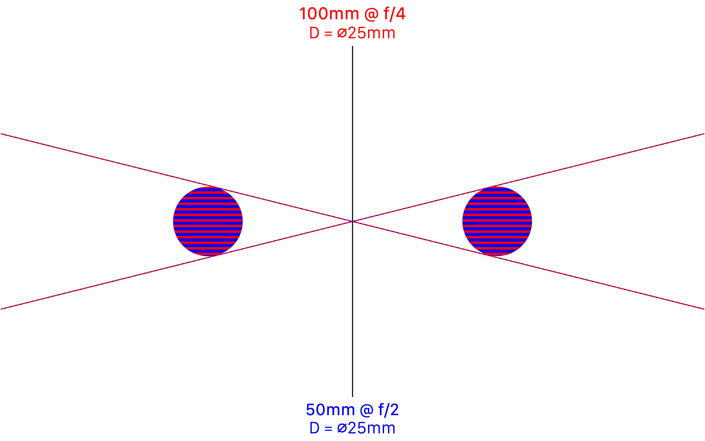
Let’s assume that a hypothetical light ray passes through a 50 mm lens once at f/1.0 and once at f/2.0. Since the f-number is defined as the ratio of focal length to entrance pupil diameter, the entrance pupil diameter is simply the focal length divided by the f-number.
For a 50 mm lens set to f/1.0, the entrance pupil diameter is 50 mm, as shown in red in the illustration above left. At f/2.0, the entrance pupil diameter is 25 mm, exactly half the previous size, as shown in blue.
Now, let’s say we have a 100 mm lens at f/4 on a full-frame camera, and we want the same field of view and blur circle on a Micro Four Thirds camera, similar to our virtual scene. By keeping the subject distance the same, all we need is a 50 mm lens at f/2.0. This setup produces the same 25 mm entrance pupil diameter, as illustrated above right.
Here I use the terms “blur circle” and “background blur” intentionally, rather than depth of field, for the reasons discussed earlier in the section on the Circle of Confusion. If we were to calculate the depth of field, however, we would see that the result is practically the same, provided we compensate for blur circle size. I say “practically” because, as mentioned before, sensor size affects the CoC limit value but the differences are so small that they make no practical impact.
Before concluding, I would like to remind you that the other direct factor influencing depth of field, besides effective aperture, is subject distance. Subject distance affects depth of field because closer subjects produce steeper ray cones; for a given entrance pupil diameter, even slight defocus results in larger blur circles. This effect is illustrated in the graphic below.
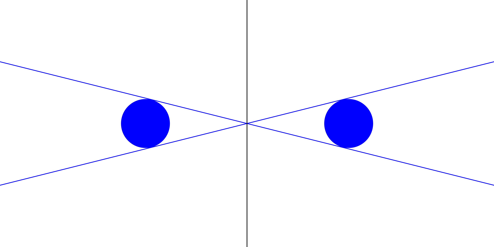
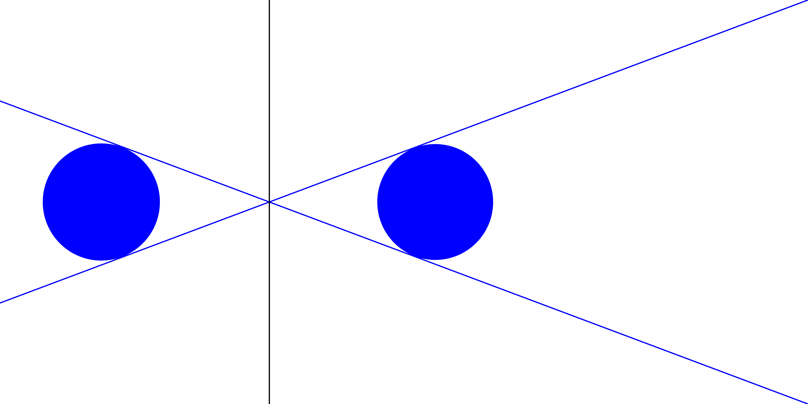
In summary, depth of field is not a rigid measurement but a perceptual framework shaped by optics, viewing conditions, and human vision. Built on the foundations of the Circle of Confusion and Hyperfocal Distance, its seemingly complex relationships ultimately reduce to two direct influences: subject distance and effective aperture diameter. By clarifying these technical concepts in a straightforward way, cinematographers can use them deliberately—not just as formulas, but as creative tools to guide attention, isolate subjects, and shape the narrative impact of an image.